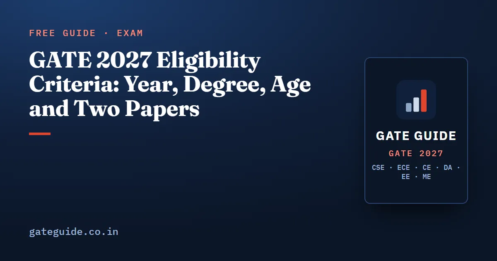

GATE 2027 Eligibility Criteria: Year, Degree, Age and Two Papers

GATE 2027 eligibility is simpler than most people expect. You can apply if you are in the third or higher year of any undergraduate degree, or have completed an approved degree, and there is no age limit and no minimum percentage. This guide walks through the official criteria one rule at a time, so you can check your own case in a few minutes.
In this guide
Key takeaways
- You are eligible from the third year of any undergraduate degree, or after completing an approved degree in engineering, technology, architecture, science, commerce, arts or humanities.
- So yes, you can give GATE in 3rd year; a typical B.Tech second-year student cannot yet.
- There is no age limit, no minimum percentage and no cap on the number of attempts.
- M.Sc., M.A. and MCA students are eligible from their first year, and medical degree students from the fifth semester.
- Candidates from outside India follow the same year rule, but must travel to India: GATE 2027 has no international centres.
- You may take one paper or two, and the second must come from the official list for your first.
The basic rule, in plain words
Two terms come up again and again in the brochure, so fix them first.
A qualifying degree is the degree on which your eligibility rests: the one you are studying for now, or the one you have finished. Currently studying in the third or higher year means you are enrolled in that year at the time of applying. It does not mean you have passed third year.
With those two terms, the main rule from the GATE 2027 brochure reads like this. You can appear if any one of these is true:
- You are currently studying in the third or higher year of any undergraduate degree programme.
- You have already completed a UGC or AICTE approved degree in engineering, technology, architecture, science, commerce, arts or humanities.
- You are pursuing, or already hold, a degree higher than the ones in the official table.
That is the whole core. Everything else in this guide is detail on top of it.
In one line: If you are in the third year or later of any undergraduate degree, or have finished one, you are almost certainly eligible.
Can I give GATE in 3rd year?
Yes. This is the most searched part of the rule, so take it slowly.
Count the year you are enrolled in today, not the years you have passed. A B.Tech student who started in 2024 is in third year during 2026-27, and GATE 2027 is held in February 2027, so that student can apply now. A student who started in 2025 is in second year and is not eligible for GATE 2027 under the B.Tech row.
| Your programme | Earliest stage you may apply |
|---|---|
| B.E., B.Tech or B.Pharm | Third year |
| B.Arch, 5-year | Third year |
| B.Sc., B.A., B.Com. or BCA, 3-year | Third year |
| B.Sc. (Research) or B.S. | Third year |
| B.Sc. in Agriculture, Horticulture or Forestry, 4-year | Third year |
| Integrated M.Sc. or 5-year B.S.-M.S. | Third year |
| Integrated M.E. or M.Tech, or dual degree, 5-year | Third year |
| Integrated M.E. or M.Tech after B.Sc., 4-year | First year |
| M.Sc., M.A., MCA or equivalent | First year |
| Pharm.D., 6 years after 10+2 | Third year |
| MBBS, BDS, BVSc and the listed AYUSH degrees | Fifth semester |
| Professional society exams such as AMIE | After completing Section A or equivalent |
Every row also covers candidates who have already completed that degree. Lateral-entry students follow the same idea: what counts is the year you are in now.
Remember: Writing GATE in third year is allowed, and the GATE 2027 score stays valid for three years from the result date. An early attempt is not wasted.
No age limit, no minimum marks, no attempt cap
Three things people worry about are simply not in the rules.
- Age. The brochure and the official FAQ both say there is no age limit to appear for GATE 2027.
- Percentage. The eligibility rules set no minimum percentage of marks. Your year of study or completed degree is what matters.
- Attempts. The official FAQ says you can appear for GATE any number of times.
The brochure does not discuss backlogs. Since eligibility rests on your year of study or a completed degree, a backlog does not appear as a condition. If your case is unusual, write to the helpdesk before you pay.
Trap: Being eligible to write GATE is not the same as being eligible for an admission or a job. Each institute and employer applies its own admission or recruitment conditions, set out in its own notice.
Degrees from professional bodies and from outside India
Professional society certificates
The brochure lists bodies such as the Institution of Engineers (India), IETE, the Institution of Civil Engineers, the Aeronautical Society of India, IIChE, the Indian Institute of Metals and the Indian Institute of Industrial Engineers. If your qualification comes from one of them, you must have completed Section A or its equivalent. You must also make sure the examination is approved by MoE, AICTE, UGC or UPSC as equivalent to B.E., B.Tech, B.Arch or B.Planning.
Candidates studying or graduated abroad
If your degree is from a country other than India, the year rule is the same. You must be currently in the third or higher year, or have completed a bachelor's degree of at least three years, in engineering, technology, science, commerce, arts, architecture or humanities.
Two practical points follow from the brochure:
- There are no international centres for GATE 2027. Foreign nationals and Indians living abroad must travel to India to take the exam.
- They pay the full application fee, the same row as "all other candidates". At the centre, foreign nationals may show only a passport, a government-issued ID or a driving licence as identification.
One paper or two: the combination rule
Eligibility for GATE also covers which papers you may choose. Here the rule has three parts:
- You may take one paper or two, never more.
- If you take two, you name a primary paper, and the second must be from the list allowed for that primary paper.
- Combinations outside the list are not allowed in the regular and extended registration windows.
| Primary paper | Allowed second papers |
|---|---|
| CS | DA, EC, GE, MA, ME, PH, RA, ST |
| EC | CS, DA, EE, IN, PH, RA |
| EE | DA, EC, IN, PH, RA |
| ME | AE, CS, DA, IN, NM, PI, RA, XE |
| CE | AE, AG, AR, ES, GE, NM, XE |
| DA | CS, EC, EE, MA, ME, PH, RA, ST, XE |
| CH | ES, PE, XE |
| IN | BM, EC, EE, ME, RA |
This is a selection of the official table; the full table for all 30 papers is on the two paper combinations page of gate2027.iitm.ac.in. Note that MN has no allowed second paper. The official page adds that more combinations may be opened later, and that a combination removed later has its second-paper fee refunded.
The fee for two papers is twice that of one. At the regular rate that is ₹2,000 for female, SC, ST and PwD candidates and ₹4,000 for everyone else. Exam days for the two papers are set by the organisers, so a second paper is only worth it if you can prepare both syllabi properly.
What to do now if you are eligible
As of 10 October 2026, the extended GATE 2027 registration window, with a late fee, closes on 12 October 2026. The application correction window runs from 14 to 21 October 2026. The official dates page says all dates are liable to change.
Your checklist:
- Find your row in the table above and confirm the year rule.
- Pick your paper, and a second one only from the allowed list.
- Check your name and date of birth. The name on the form must match your photo ID exactly, and that same ID must be brought in original to the centre.
- Apply on GOAPS before 12 October 2026, using the registration and fee guide for the form itself.
- Note the next dates: exam city notification on 4 January 2027, exams from 6 to 21 February 2027, and the result on 19 March 2027, all in the GATE 2027 exam dates guide.
Before exam day, read the admit card and exam day rules, and see what IIT Madras as organiser means for 2027. Once the form is in, the remaining months are for preparation; our books cover CSE, ECE, CE, DA, EE and ME with every past question solved, and you can see the books for every branch.
Quick revision
- Eligible: third or higher year of any undergraduate degree, or a completed approved degree.
- A B.Tech third-year student can write GATE 2027; a second-year student cannot.
- M.Sc., M.A. and MCA students qualify from first year; medical degrees from fifth semester.
- No age limit, no minimum percentage, and no limit on attempts.
- Candidates from abroad follow the same year rule, pay the full fee and must sit the exam in India.
- Take one or two papers; the second must be on the official list for your primary paper.
- Extended registration with late fee closes 12 October 2026; corrections run 14 to 21 October 2026.
Frequently asked questions
Can I give GATE in 3rd year?
Yes. The GATE 2027 brochure makes any candidate currently studying in the third or higher year of an undergraduate degree eligible. A B.E. or B.Tech student in third year can therefore apply for GATE 2027. A second-year student does not meet the rule yet, except in programmes the brochure lists separately, such as M.Sc., M.A. and MCA from the first year.
Is there an age limit for GATE 2027?
No. The official brochure and the GATE 2027 FAQ both state that there is no age limit to appear for GATE 2027. The official FAQ also says a candidate may appear for GATE any number of times, so a graduate of many years ago is eligible if the degree meets the criteria.
Is there a minimum percentage required for GATE 2027?
The GATE 2027 eligibility rules do not set any minimum percentage of marks. Eligibility depends on your year of study or on having completed a qualifying degree. Institutes that admit students through GATE may set their own academic conditions, so check the admission notice of each institute separately.
Can foreign nationals write GATE 2027?
Yes. Candidates studying or graduated outside India must be in the third or higher year, or have completed a bachelor's degree of at least three years, in a listed field. The brochure says there are no international centres for GATE 2027, so they must travel to India, and they pay the full application fee.
Can I write two GATE papers in 2027?
Yes, but only from the allowed combinations. You choose a primary paper, and the second paper must come from the list allowed for that primary paper. For example, CS may be paired with DA, EC, GE, MA, ME, PH, RA or ST. Other combinations are not allowed in the regular and extended windows, and the fee doubles.
Sources
- GATE 2027 official website (IIT Madras)
- GATE 2027 Information Brochure (official PDF)
- GATE 2027 eligibility criteria (official)
- GATE 2027 two paper combinations (official)
- GATE 2027 FAQs (official)
Dates, fees and the syllabus are set by the GATE 2027 organising institute and can change. Always confirm at gate2027.iitm.ac.in.